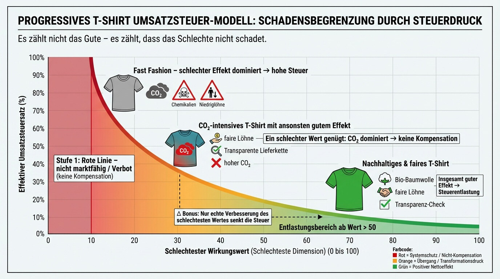

Wenn Wirtschaft heute als „gescheitert“ oder „nicht mehr zeitgemäß“ beschrieben wird, klingt das häufig nach Ideologie. Nach Kapitalismuskritik, nach Systemwechsel, nach politischem Lager.
Doch das eigentliche Problem liegt tiefer - und ist erstaunlich unpolitisch.
Unser heutiges Wirtschafts- und Steuersystem ist logisch inkonsistent geworden. Nicht, weil es falsch gedacht war, sondern weil es für eine andere Welt gebaut wurde.
1. Ein System aus einer Zeit begrenzter Wirkung
Die Grundlogik unserer Marktwirtschaft entstand in einer Welt,
in der Umweltwirkungen lokal und begrenzt waren,
in der Lieferketten überschaubar blieben,
in der wirtschaftliche Entscheidungen selten globale Folgen hatten,
in der Demokratie nicht durch digitale Desinformation skaliert wurde.
In dieser Welt war es sinnvoll, Wirtschaft vor allem über:
Preise
Mengen
Produktivität
Wachstum
zu steuern.
Wirkung war vorhanden, aber sie skalierte nicht systemisch.
Heute ist das anders.
Ein einzelnes Produkt kann:
globale Lieferketten beeinflussen,
Ökosysteme belasten,
Arbeitsmärkte verzerren,
politische Diskurse destabilisieren.
Die Wirkung wirtschaftlichen Handelns ist nicht mehr lokal, sondern systemisch.
2. Der logische Bruch: Wir steuern mit alten Größen in einer neuen Realität
Trotz dieser veränderten Realität steuern wir Wirtschaft weiterhin fast ausschließlich über:
Kapital
Umsatz
Gewinn
Durchschnittswerte
Das erzeugt einen grundlegenden Widerspruch:
Je größer die Wirkung wirtschaftlichen Handelns wird, desto weniger bildet unser Steuerungsmodell diese Wirkung ab.
Wir messen heute zwar:
Emissionen
Lieferketten
soziale Risiken
Governance
Doch diese Informationen bleiben nebensächlich, solange sie
nicht steuerlich relevant sind,
nicht preisbildend wirken,
nicht in reale Anreize übersetzt werden.
Das führt zu einem paradoxen Zustand:
Unternehmen handeln häufig regelkonform,
Märkte funktionieren formal,
und dennoch entstehen systemische Krisen.
Nicht wegen böser Absichten - sondern wegen falscher Priorisierung.
3. Warum niemand „schuld“ ist - und trotzdem etwas geändert werden muss
Ein häufiger Reflex lautet:
„Dann müssen Unternehmen eben verantwortungsvoller handeln.“
Doch das greift zu kurz.
Unternehmen handeln rational innerhalb der Regeln, die gelten. Wenn ein System:
Umsatz belohnt,
Wirkung aber ignoriert,
dann ist es kein moralisches Versagen, sondern ein steuerungslogischer Effekt, wenn Wirkung nachrangig bleibt.
Dasselbe gilt für:
Konsument:innen
Investor:innen
Politik
Solange das Regelwerk Kapital priorisiert und Wirkung externalisiert, wird sich Verhalten nur punktuell ändern.
Ein nachhaltiger Wandel entsteht nicht durch Appelle, sondern durch eine andere Rechenlogik.
4. Der entscheidende Perspektivwechsel: Wirkung als zentrale Steuerungsgröße
Die Wirkungsökonomie setzt genau hier an.
Sie ersetzt kein marktwirtschaftliches Prinzip. Sie stellt keinen Gegenentwurf zur sozialen Marktwirtschaft dar. Sie schafft keinen neuen politischen Lagerkampf.
Sie beantwortet eine einfache, aber lange ausgeblendete Frage:
Was passiert eigentlich real, wenn wir wirtschaftlich handeln - und warum bildet unser System das kaum ab?
Die Antwort der Wirkungsökonomie lautet:
Wirkung ist keine Randgröße.
Wirkung ist die zentrale Steuerungsgröße einer hochvernetzten Welt.
Kapital bleibt wichtig. Märkte bleiben wichtig. Wettbewerb bleibt wichtig.
Aber sie werden an Wirkung rückgekoppelt.
5. Warum in der Wirkungsökonomie alle gewinnen können
Gerade weil die Wirkungsökonomie kein ideologisches Gegenmodell ist, ist sie politisch inklusiv.
Konservative finden darin Ordnung, Stabilität und Schutz kritischer Systeme.
Liberale finden marktwirtschaftliche Anreize statt Verbote.
Sozialdemokratische Perspektiven finden faire Rahmenbedingungen statt bloßer Umverteilung.
Ökologische Perspektiven finden wirksame Steuerung statt Symbolpolitik.
Keine Partei muss ihre Werte aufgeben. Sie werden operationalisiert.
Die Wirkungsökonomie entscheidet nicht, was politisch gewollt ist. Sie sorgt dafür, dass das Gewollte auch wirksam wird.
6. Warum das kein Bruch, sondern die nächste Entwicklungsstufe ist
Historisch betrachtet war jede große wirtschaftliche Weiterentwicklung ein Wechsel der Steuerungsgröße:
von Macht zu Eigentum
von Eigentum zu Kapital
von Kapital zu Produktivität
Die Wirkungsökonomie ist kein Bruch mit dieser Geschichte, sondern ihre logische Fortsetzung:
In einer Welt systemischer Wirkung wird Wirkung selbst zur zentralen Größe.
Nicht aus Ideologie. Sondern aus Notwendigkeit.
Wenn Wirkung zur zentralen Größe wird, stellt sich eine entscheidende Frage:
Wie messen und steuern wir Wirkung so, dass sie nicht verrechnet, sondern systemisch berücksichtigt wird?
Die Antwort darauf beginnt im nächsten Kapitel - mit einem einfachen, alltäglichen Beispiel, das zeigt, warum Kompensation logisch nicht funktioniert und wie ein wirkungsorientiertes Steuersystem stattdessen aussieht.
Was Wirkungsökonomie konkret bedeutet - und was nicht
Nachdem klar ist, warum unser bisheriges Wirtschaftsmodell an logische Grenzen stößt, stellt sich die nächste Frage:
Was genau macht die Wirkungsökonomie anders - ganz konkret?
Nicht als Vision. Nicht als moralischer Anspruch. Sondern als ordnungspolitisches Steuerungsmodell für eine hochvernetzte Welt.
2.1 Wirkung statt Absicht: Der grundlegende Perspektivwechsel
Im Zentrum der Wirkungsökonomie steht ein einfacher, aber folgenreicher Perspektivwechsel:
Nicht die Absicht, nicht das Narrativ und nicht der Durchschnitt zählen - sondern die reale Wirkung wirtschaftlichen Handelns.
Das bedeutet ganz praktisch:
nicht „wir bemühen uns“
nicht „wir sind auf dem Weg“
nicht „im Schnitt sind wir gut“
sondern:
Was passiert tatsächlich - messbar, überprüfbar, systemisch relevant?
Damit knüpft die Wirkungsökonomie an eine Logik an, die wir aus anderen Bereichen längst kennen:
Produktsicherheit
Medizin
Technik
Risikomanagement
Dort zählt nicht die gute Absicht, sondern der kritische Effekt. Neu ist lediglich, diese Logik konsequent auf Wirtschaft und Marktsteuerung anzuwenden.
2.2 Wirkung ist mehrdimensional - aber nicht verrechenbar
Ein zentrales Missverständnis ist die Annahme, Wirkungsökonomie würde „alles in einen Topf werfen“ oder verschiedene Aspekte gegeneinander aufrechnen.
Das Gegenteil ist der Fall.
Die Wirkungsökonomie arbeitet mit klar getrennten Wirkungsdimensionen, insbesondere:
Mensch (z. B. Arbeitsbedingungen, Gesundheit, Rechte, soziale Sicherheit)
Planet (z. B. Klima, Ressourcen, Biodiversität, Wasser, Boden)
Demokratie (z. B. Transparenz, Machtkonzentration, Desinformation, institutionelles Vertrauen)
Diese Dimensionen sind:
gleichrangig,
nicht substituierbar,
nicht kompensierbar.
Warum?
Weil reale Systeme nicht zulassen, dass ein Schaden in einer Dimension durch Vorteile in einer anderen neutralisiert wird.
Ein Unternehmen kann sozial fair sein und gleichzeitig ein erhebliches Klimaproblem darstellen. Beides ist gleichzeitig wahr.
Die Wirkungsökonomie macht diesen Widerspruch sichtbar, statt ihn rechnerisch zu glätten.
2.3 Worst-Case-Logik statt Durchschnitt: Wo Systeme tatsächlich scheitern
Hier liegt der vielleicht entscheidendste Unterschied zu vielen bestehenden ESG-, Score- und Ratingmodellen.
Während diese fragen:
„Wie gut ist das Gesamtbild?“
fragt die Wirkungsökonomie:
„Wo liegt das größte systemische Risiko?“
Konkret bedeutet das:
Der schlechteste Wirkungswert ist steuerlich und regulatorisch entscheidend.
Nicht der Mittelwert.
Nicht die Summe positiver Effekte.
Diese Logik folgt einer einfachen systemischen Erkenntnis:
Systeme scheitern dort, wo sie am schwächsten sind.
Kipppunkte entstehen lokal - nicht im Durchschnitt. Diese Erkenntnis ist in sicherheitskritischen Bereichen Standard. Neu ist lediglich, sie auf wirtschaftliche Steuerung zu übertragen.
2.4 Warum „Mensch, Planet und Demokratie“ - und woher diese Dimensionen kommen
Die Wirkungsökonomie erfindet ihre Maßstäbe nicht neu. Sie verdichtet und operationalisiert, was auf internationaler Ebene längst Konsens ist.
Die drei zentralen Wirkungsdimensionen - Mensch, Planet und Demokratie - leiten sich direkt aus den Sustainable Development Goals ab.
Die SDGs als normative Grundlage
Mit der Agenda 2030 haben sich nahezu alle Staaten der Welt auf gemeinsame Ziele verständigt:
Armutsbekämpfung
Gesundheit
Bildung
menschenwürdige Arbeit
Klimaschutz
Schutz von Ökosystemen
Frieden, Rechtsstaatlichkeit und starke Institutionen
Diese Ziele sind nicht ideologisch, sondern Ergebnis jahrzehntelanger multilateraler Aushandlung. Sie bilden bereits heute die normative Basis für:
Nachhaltigkeitspolitik
Entwicklungszusammenarbeit
Unternehmensberichterstattung
Finanzmarkt- und Regulierungssysteme
Die Wirkungsökonomie nimmt diese Ziele ernst - und zieht daraus die ordnungspolitische Konsequenz.
Von 17 Zielen zu drei systemischen Wirkungsräumen
Die 17 SDGs lassen sich systemisch bündeln, ohne ihren Gehalt zu verlieren:
Mensch: soziale und individuelle Wirkungen wirtschaftlichen Handelns
Planet: ökologische Belastungsgrenzen und Regenerationsfähigkeit
Demokratie: institutionelle Stabilität, Machtbegrenzung und Diskursqualität
Diese Bündelung ist kein Vereinfachungstrick, sondern eine Systematisierung nach realen Wirkungsräumen.
Denn genau so wirken wirtschaftliche Aktivitäten:
auf Menschen,
auf ökologische Systeme,
und auf demokratische Ordnungen.
Warum Demokratie explizit dazugehört
In vielen Nachhaltigkeitsmodellen taucht Demokratie nur implizit auf - etwa unter „Governance“.
Die Wirkungsökonomie macht sie explizit.
Warum?
Weil wirtschaftliche Aktivitäten heute:
Medienökonomien beeinflussen,
Informationsräume verzerren,
Machtkonzentrationen verstärken oder abschwächen,
demokratische Entscheidungsprozesse indirekt beeinflussen können.
Demokratische Stabilität ist kein Nebenprodukt wirtschaftlichen Handelns mehr. Sie ist eine eigene Wirkungsebene.
Wer Wirkung ernst nimmt, kann Demokratie nicht ausklammern.
2.5 Anschlussfähigkeit: Keine neuen Daten, sondern neue Logik
Ein entscheidender Punkt: Die Wirkungsökonomie verlangt keine neue Datenerhebung aus dem Nichts.
Sie baut auf bereits existierenden Systemen auf, unter anderem:
Nachhaltigkeits- und ESG-Berichterstattung
Lieferketten- und Sorgfaltspflichten
Umwelt-, Sozial- und Governance-Kennzahlen
Transparenz- und Risikoberichte
Der Unterschied liegt nicht in den Daten, sondern in ihrer Verwendung.
Heute werden diese Informationen:
dokumentiert,
berichtet,
bewertet,
aber kaum systemisch wirksam gemacht.
Die Wirkungsökonomie schließt genau diese Lücke.
2.6 Vom Berichten zum Steuern
Damit vollzieht die Wirkungsökonomie einen entscheidenden Schritt:
Wirkung wird nicht mehr nur offengelegt - sie wird entscheidungsrelevant.
Nicht durch zusätzliche Moral. Nicht durch neue Narrative. Sondern durch klare, transparente Konsequenzen im Steuer- und Anreizsystem.
Das macht die Wirkungsökonomie:
kompatibel mit bestehenden Institutionen,
anschlussfähig für Politik, Wirtschaft und Finanzmärkte,
und zugleich deutlich wirksamer als reine Transparenzmodelle.
2.7 Was Wirkungsökonomie ausdrücklich nicht ist
Zur Klarstellung gehört auch eine saubere Abgrenzung.
Die Wirkungsökonomie ist:
keine Moralökonomie Sie bewertet keine Gesinnung, sondern Wirkung.
keine Planwirtschaft Sie schreibt nicht vor, wie produziert wird - nur, welche systemrelevanten Schäden nicht folgenlos bleiben.
keine Anti-Markt-Idee Wettbewerb bleibt zentral, verlagert sich aber von Gewinnmaximierung zu Wirkungsqualität.
kein Parteiprojekt Sie legt keine politischen Inhalte fest, sondern schafft einen Rahmen, in dem unterschiedliche politische Ziele wirksam werden können.
2.8 Warum die Wirkungsökonomie politisch inklusiv ist
Gerade weil sie sich auf die Steuerungslogik beschränkt, ist die Wirkungsökonomie anschlussfähig für sehr unterschiedliche politische Perspektiven:
Wer Stabilität will, bekommt Systemschutz.
Wer Freiheit will, bekommt Marktanreize statt Verbote.
Wer Gerechtigkeit will, bekommt faire Rahmenbedingungen.
Wer Nachhaltigkeit will, bekommt Wirksamkeit statt Symbolik.
Keine Partei muss ihre Werte aufgeben. Sie werden operationalisiert.
2.9 Warum das Beispiel entscheidend ist
Wenn Wirkung nach Mensch, Planet und Demokratie messbar ist und der schlechteste Wert systemisch entscheidend wird,
stellt sich eine sehr konkrete Frage:
Was passiert, wenn ein Produkt in fast allem gut ist - aber in einer Dimension ein echtes Problem darstellt?
Genau das zeigt das nächste Kapitel - anhand eines einfachen Alltagsprodukts und einer Grafik, die diese Logik sichtbar macht.
Drei T-Shirts, eine Steuerkurve - wie Wirkungsökonomie konkret wirkt
Nachdem geklärt ist, warum Wirkungsökonomie notwendig ist und wie sie grundsätzlich funktioniert, stellt sich die entscheidende Frage:
Wie sieht das konkret aus - jenseits von Theorie und Begriffen?
Um das sichtbar zu machen, reicht ein bewusst simples Beispiel. Kein Konzern, keine Branche, kein Spezialfall.
Ein T-Shirt.
3.1 Warum ein Alltagsprodukt mehr erklärt als jede Theorie
T-Shirts sind scheinbar banal. Genau deshalb sind sie ideal.
Denn an ihnen wird sichtbar, was heute häufig unsichtbar bleibt:
globale Lieferketten
soziale Bedingungen
ökologische Wirkungen
Preis- und Steuerlogik
Alle drei folgenden T-Shirts erfüllen dieselbe Funktion. Sie kosten im Einkauf vergleichbar viel. Sie konkurrieren im selben Markt.
Der Unterschied liegt ausschließlich in ihrer Wirkung.
3.2 Die Grundlogik der Bewertung: Nicht der Durchschnitt, sondern der schlechteste Wert
Bevor wir die drei T-Shirts betrachten, ist eine Sache zentral:
In der Wirkungsökonomie gilt:
nicht der Mittelwert aller Wirkungen,
nicht die Summe positiver Effekte,
sondern der schlechteste Wirkungswert
als steuerlich relevante Größe.
Warum? Weil systemische Risiken genau dort entstehen, wo eine Dimension unter eine tragfähige Schwelle fällt.

Diese Logik wird in der Grafik durch die Steuerkurve sichtbar:
links: hohe Steuerbelastung bei schlechter Wirkung
rechts: Entlastung bei stabiler Wirkung
ganz links: rote Linie als harte Systemgrenze
3.3 T-Shirt 1: Fast Fashion - wenn mehrere Probleme zusammenkommen
Das erste T-Shirt steht für klassische Fast Fashion.
Typische Merkmale:
niedrige Löhne
hohe Umweltbelastung
geringe Transparenz
kurze Nutzungsdauer
Hier liegen mehrere Wirkungsdimensionen im problematischen Bereich.
In der Grafik landet dieses T-Shirt weit links:
der schlechteste Wert ist sehr niedrig
die Steuerbelastung entsprechend hoch
Das ist keine moralische Bewertung. Es ist die logische Folge hoher systemischer Risiken.
Solche Produkte sind billig im Regal - aber teuer für Gesellschaft und Umwelt. Die Wirkungsökonomie macht diesen Preis sichtbar.
3.4 T-Shirt 2: Ganzheitlich nachhaltig - stabile Wirkung über alle Dimensionen
Das zweite T-Shirt ist in allen relevanten Dimensionen solide aufgestellt:
faire Arbeitsbedingungen
niedrige CO₂-Emissionen
ressourcenschonende Materialien
transparente Lieferkette
Entscheidend ist nicht, dass dieses T-Shirt „perfekt“ ist, sondern dass keine Dimension systemisch problematisch wird.
Der schlechteste Wirkungswert liegt deutlich über kritischen Schwellen.
In der Grafik erscheint dieses T-Shirt:
rechts im Entlastungsbereich
mit niedrigerer Steuer
Nicht als Belohnung für Moral, sondern als Konsequenz stabiler Wirkung.
3.5 T-Shirt 3: Fast alles gut - aber CO₂ schlecht
Das dritte T-Shirt ist der entscheidende Testfall.
Es erfüllt fast alle Kriterien:
faire Löhne ✔
hohe Transparenz ✔
gute soziale Standards ✔
Aber: Die CO₂-Bilanz ist deutlich schlecht.
Zum Beispiel:
energieintensive Produktion
fossile Prozessenergie
lange, ineffiziente Transportwege
Und hier greift der Kern der Wirkungsökonomie:
Ein schlechter Wert reicht.
Trotz vieler positiver Eigenschaften bestimmt der CO₂-Wert die steuerliche Einordnung.
In der Grafik landet dieses T-Shirt:
links vom ganzheitlich nachhaltigen Produkt
mit spürbar höherer Steuer
Nicht, weil alles andere ignoriert wird, sondern weil Klimawirkung ein systemrelevanter Faktor ist.
Genau hier wird Greenwashing strukturell unmöglich:
gutes Marketing hilft nicht
soziale Programme kompensieren kein Klimaproblem
Durchschnittswerte zählen nicht
3.6 Die rote Linie: Wo Kompensation endet
Ganz links in der Grafik liegt die rote Linie.
Sie markiert Wirkungen, bei denen:
irreversible Schäden entstehen
grundlegende Schutzgüter verletzt werden
kein legitimer Marktzugang mehr besteht
Unterhalb dieser Schwelle:
gibt es keine Steuerkurve mehr
keine Boni
keine Verrechnung
Das ist kein ökonomischer Spielraum, sondern Systemschutz.
Diese Logik kennen wir aus anderen Bereichen längst:
Produktsicherheit
Chemikalienrecht
Arbeitsschutz
Die Wirkungsökonomie überträgt sie konsequent auf Wirkung insgesamt.
3.7 Der Lernpfad: Warum das kein Strafsystem ist
Ein häufiger Einwand lautet:
„Dann ist das CO₂-schlechte T-Shirt doch benachteiligt.“
Die Antwort lautet: Nein - es bekommt einen klaren Lernpfad.
In der Grafik ist das als Δ-Pfeil dargestellt:
Nur die Verbesserung des schlechtesten Wertes
führt zu einer Bewegung nach rechts
und damit zu geringerer Steuer
Nicht Imagekampagnen. Nicht Teilaspekte. Nicht Kompensation.
Sondern reale Veränderung dort, wo das Risiko entsteht.
Das macht die Wirkungsökonomie:
lernend
dynamisch
innovationsfreundlich
ohne systemische Schäden zu relativieren.
3.8 Was dieses Beispiel zeigt - über T-Shirts hinaus
Das T-Shirt ist nur ein Beispiel.
Die Logik dahinter ist universell:
für Produkte
für Dienstleistungen
für Geschäftsmodelle
für ganze Wertschöpfungsketten
Die Wirkungsökonomie stellt eine einfache, aber folgenreiche Regel auf:
Nicht das Gute zählt - sondern dass das Schlechte nicht das System gefährdet.
Damit wird Wirkung endlich das, was sie in einer hochvernetzten Welt sein muss:
die zentrale Steuerungsgröße.
Von der Grafik zum Gesetz - wie Wirkungsökonomie praktisch umgesetzt werden kann
Die Grafik im vorherigen Kapitel zeigt eine Logik. Dieses Kapitel beantwortet die naheliegende nächste Frage:
Ist das nur ein Modell - oder lässt sich das real umsetzen?
Die kurze Antwort lautet: Ja. Nicht als revolutionärer Systemwechsel, sondern als ordnungspolitische Weiterentwicklung bestehender Instrumente.
4.1 Wirkung steuern heißt nicht neu erfinden, sondern neu verknüpfen
Ein häufiger Einwand lautet:
„Dafür bräuchte man völlig neue Daten, neue Behörden, neue Bürokratie.“
Das Gegenteil ist der Fall.
Die Wirkungsökonomie baut bewusst auf bestehenden Strukturen auf:
Nachhaltigkeits- und ESG-Berichterstattung
Lieferketten- und Sorgfaltspflichten
Umwelt- und Sozialindikatoren
Produkt- und Verbraucherschutzrecht
Was bisher fehlt, ist die Rückkopplung.
Heute gilt:
Wirkung wird dokumentiert
Risiken werden beschrieben
Probleme werden berichtet
Aber:
Sie bleiben folgenlos, solange sie keine ökonomische Relevanz haben.
Die Wirkungsökonomie schließt diese Lücke, indem sie bestehende Informationen steuerlich wirksam macht.
4.2 Der Kern der Umsetzung: Eine wirkungsbasierte Steuerlogik
Im Zentrum steht eine einfache, aber robuste Regel:
Der schlechteste Wirkungswert bestimmt die steuerliche Einordnung.
Konkret bedeutet das:
Wirkung wird anhand klar definierter Indikatoren bewertet
diese Indikatoren sind öffentlich, standardisiert und überprüfbar
aus ihnen ergibt sich ein Worst-Case-Wert
Dieser Wert wird:
nicht verrechnet
nicht relativiert
sondern direkt in eine Steuerfunktion überführt
Die Grafik aus Kapitel 3 visualisiert genau diesen Zusammenhang:
schlechte Wirkung → hohe Steuer
stabile Wirkung → Entlastung
kritische Wirkung → rote Linie
4.3 Zwei Stufen, ein System: Schutz und Lernen
Die Wirkungsökonomie arbeitet mit einem zweistufigen Ordnungsrahmen.
Stage 1: Harte rote Linien - Systemschutz
Für bestimmte Wirkungen gelten Mindeststandards:
schwere Umwelttoxikologie
Kinder- oder Zwangsarbeit
massive Menschenrechtsverletzungen
demokratiegefährdende Praktiken
Unterhalb dieser Schwellen:
kein Marktzugang
oder extreme Steuerklasse
keine Kompensation
Das ist kein Sonderrecht, sondern die konsequente Anwendung bestehender Schutzlogiken.
Stage 2: Progressive Steuerkurve - Lern- und Transformationspfad
Oberhalb der roten Linien greift die Steuerkurve:
kontinuierlich
progressiv
risikoorientiert
Entscheidend ist:
nicht die Perfektion
sondern die Richtung
Unternehmen und Produkte erhalten:
klare Anreize zur Verbesserung
keine Belohnung für Schönreden
Nur die reale Verbesserung des schlechtesten Wirkungswertes führt zu einer geringeren Steuerlast.
4.4 Warum das kein Strafsystem ist
Ein Missverständnis muss an dieser Stelle ausgeräumt werden:
Die Wirkungsökonomie bestraft niemanden. Sie bepreist Risiken.
So wie:
Versicherungen Risiken bepreisen
Sicherheitsauflagen Risiken begrenzen
Umweltabgaben Schäden internalisieren
Der Unterschied ist:
Die Wirkungsökonomie tut dies systematisch und konsistent.
Sie ersetzt:
Einzelfallsubventionen
Ausnahmeregeln
symbolische Förderung
durch:
transparente Regeln
kontinuierliche Anreize
faire Wettbewerbsbedingungen
4.5 Nationale Einführung: Warum Deutschland ein sinnvoller Startpunkt ist
Ein weiterer häufiger Einwand lautet:
„Aber das müsste doch mindestens europäisch passieren.“
Tatsächlich gilt:
Steuerhoheit liegt primär bei den Mitgliedstaaten
nationale Vorreiter sind in der EU die Regel, nicht die Ausnahme
Wichtig ist:
gleiche Regeln für in- und ausländische Produkte
keine Herkunftsdiskriminierung
transparente Kriterien
Genau das leistet die Wirkungsökonomie.
Wer in Deutschland verkauft, unterliegt denselben Wirkungsmaßstäben - unabhängig vom Produktionsort.
4.6 Europäische Anschlussfähigkeit statt Sonderweg
Gerade weil die Wirkungsökonomie:
auf bestehenden EU-Zielen aufbaut
bestehende Berichtsstandards nutzt
keine neuen Schutzgüter erfindet
ist sie hochgradig europakompatibel.
Historisch haben sich viele EU-Instrumente so entwickelt:
nationale Modelle
praktische Erfahrung
schrittweise Harmonisierung
Die Wirkungsökonomie ist kein deutscher Sonderweg, sondern ein erprobbarer Prototyp.
4.7 Was sich dadurch real verändert
Mit der Wirkungsökonomie verändert sich nicht:
ob Unternehmen Gewinne machen dürfen
ob Märkte existieren
ob Innovation möglich ist
Es verändert sich:
wo Wettbewerb stattfindet
welche Risiken sich lohnen
welche Geschäftsmodelle Zukunft haben
Nicht Moral entscheidet, sondern Systemverträglichkeit.
Die Wirkungsökonomie ist weder Utopie noch Ideologie. Sie ist die logische Antwort auf eine Welt, in der wirtschaftliche Wirkung systemisch geworden ist.
Sie schützt dort, wo Schutz nötig ist. Sie lässt lernen, wo Lernen möglich ist. Und sie verbindet Markt, Verantwortung und Freiheit zu einem konsistenten Ordnungsrahmen.
Im abschließenden Kapitel geht es darum, warum genau diese Logik jetzt entscheidend ist - und was sie für Politik, Wirtschaft und Gesellschaft bedeutet.
Warum Wirkungsökonomie kein Gegenmodell ist - sondern die nächste Entwicklungsstufe
Die Wirkungsökonomie ist weder ein Bruch mit der Marktwirtschaft noch eine ideologische Neuordnung.
Sie ist die logische Weiterentwicklung eines Systems, das in einer hochvernetzten Welt an seine Steuerungsgrenzen gestoßen ist.
5.1 Kein Systemwechsel - sondern ein Wechsel der Steuerungsgröße
Historisch betrachtet haben sich Wirtschaftssysteme nie dadurch verändert, dass Märkte abgeschafft wurden, sondern dadurch, was Märkte steuern sollten.
Eigentum ersetzte rohe Macht
Kapital ersetzte feudale Abhängigkeiten
Produktivität ersetzte reine Besitzlogik
Heute stehen wir vor einem ähnlichen Punkt.
Kapital, Märkte und Wettbewerb funktionieren weiterhin - aber sie reichen allein nicht mehr aus, um systemische Risiken sichtbar und steuerbar zu machen.
Die Wirkungsökonomie ersetzt Kapital nicht. Sie ordnet es ein.
In einer Welt systemischer Wirkung wird Wirkung selbst zur zentralen Steuerungsgröße.
5.2 Warum alle gewinnen können - und niemand verlieren muss
Ein entscheidender Vorteil der Wirkungsökonomie ist ihre politische Inklusivität.
Sie zwingt niemanden, seine Werte aufzugeben. Sie sorgt dafür, dass Werte wirksam werden.
Wer Ordnung und Stabilität will, findet sie im klaren Systemschutz und in roten Linien.
Wer Freiheit und Marktmechanismen schätzt, findet sie in transparenten, nicht-dirigistischen Anreizen.
Wer soziale Gerechtigkeit fordert, findet sie in fairen Wettbewerbsbedingungen statt nachträglicher Korrekturen.
Wer ökologische Verantwortung will, findet sie nicht als Symbolik, sondern als reale Steuerungsgröße.
Die Wirkungsökonomie entscheidet nicht über politische Ziele. Sie entscheidet darüber, ob Ziele Realität werden oder folgenlos bleiben.
5.3 Warum das Modell realistisch ist - gerade jetzt
Die Wirkungsökonomie setzt nicht auf:
perfekte Akteure
freiwillige Selbstverpflichtung
moralische Einsicht
Sondern auf:
klare Regeln
transparente Anreize
systemische Lernpfade
Sie akzeptiert, dass Menschen und Unternehmen rational handeln - und korrigiert deshalb die Rahmenbedingungen, nicht die Motive.
Gerade in Zeiten:
geopolitischer Spannungen
wirtschaftlicher Unsicherheit
gesellschaftlicher Polarisierung
ist das kein Nachteil, sondern eine Stärke.
Stabile Systeme brauchen klare, nachvollziehbare Logik - keine moralische Überforderung.
5.4 Warum der richtige Zeitpunkt jetzt ist
Noch nie waren die Voraussetzungen so gut wie heute:
Wirkung wird bereits gemessen
Risiken werden bereits berichtet
Lieferketten sind bereits sichtbar
politische Ziele sind bereits formuliert
Was fehlt, ist die Konsequenz.
Die Wirkungsökonomie schließt diese letzte Lücke:
vom Wissen zum Steuern.
Nicht radikal. Nicht über Nacht. Sondern schrittweise, lernend, anschlussfähig.
5.5 Schlussgedanke
Die zentrale Frage unserer Zeit lautet nicht mehr:
Ob wir uns Wirkung leisten wollen.
Sondern:
Ob wir uns weiterhin leisten können, sie nicht zu steuern.
Die Wirkungsökonomie ist keine Ideologie. Sie ist ein Ordnungsrahmen für eine Welt, in der wirtschaftliches Handeln systemische Folgen hat.
Nicht als Bruch mit der Vergangenheit. Sondern als ihre konsequente Fortsetzung.